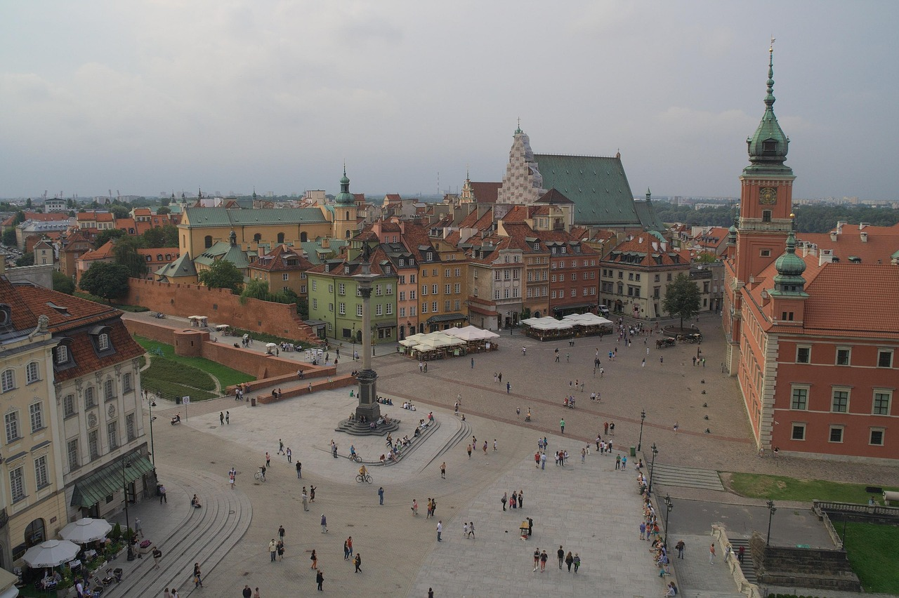
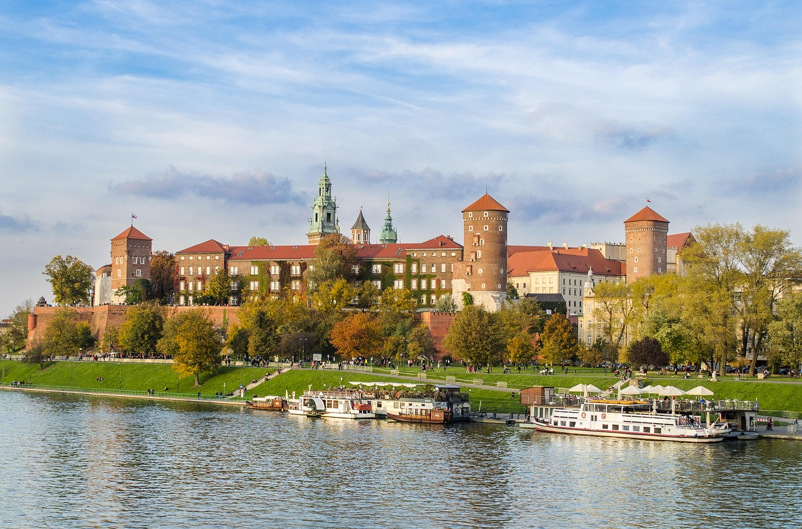
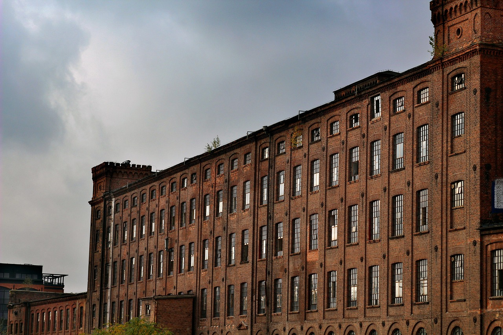

Varsovia
Esta entrada habla sobre Varsovia, la capital de Polonia.
Visitas:

Cracovia
Esta entrada habla sobre Cracovia, gran centro cultural polaco.
Visitas:

Lodz
Esta entrada habla sobre Lodz, antiguo motor de la industria textil polaca.
Visitas: